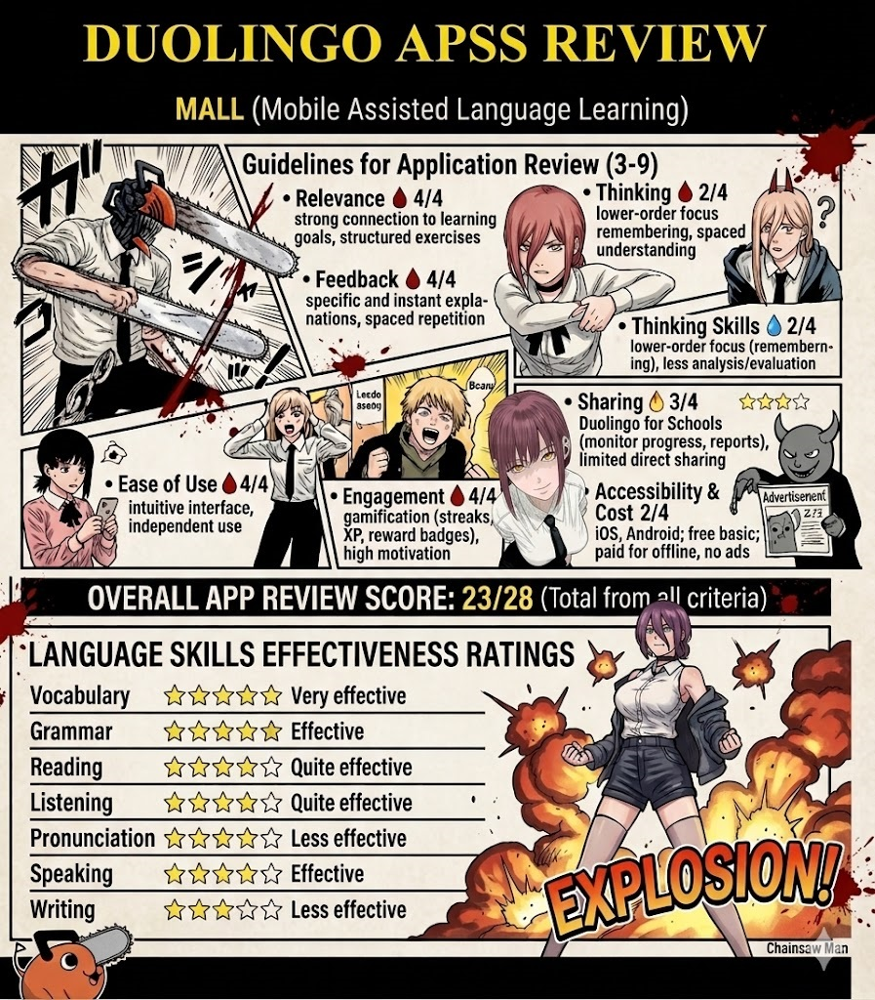

How to Download Duolingo on iOS
A quick step-by-step guide to getting started with Duolingo on your
iPhone or iPad.

🖼️
Tutorial image not found
Expected:
assets/images/tutorial to download.jpg
8-Day Duolingo Log
A daily record of using Duolingo on iOS — observations, reflections,
and a short video for each session.
✦ Notes & Reflection
▶ Video

▶
Day 1 — Download and First Look at Duolingo
✦ Notes & Reflection
▶ Video

▶
Day 2 — Technology of Duolingo
✦ Notes & Reflection
▶ Video

▶
Day 3 — Exploring Exercise Types
✦ Notes & Reflection
▶ Video

▶
Day 4 — Mid-Week Check-In
✦ Notes & Reflection
▶ Video

▶
Day 5 — Gamification & Motivation
✦ Notes & Reflection
▶ Video

▶
Day 6 — Strengths & Weaknesses
✦ Notes & Reflection
▶ Video

▶
Day 7 — Consistency & Progress Review
✦ Notes & Reflection
▶ Video

▶
Day 8 — Final Verdict & ELT Reflection
Application Rubric Evaluation
An in-depth breakdown of Duolingo iOS across the first four
evaluation criteria used in EdTech assessment.
🎯 Relevance
★★★★
4/4
💬 Feedback
★★★★
4/4
🧠 Thinking Skills
★★★★
2/4
⚙️ Ease of Use
★★★★
4/4
✦ Evaluation
My evaluation after using Duolingo for 8 days was a new
experience after a long time away from the application. It is
helpful for students or anyone who wants to find a new way to
learn a language. Many languages are available on Duolingo,
although there is a weakness: the content becomes more
repetitive the longer you use it. This application offers
exciting surprises for young learners who want to train
themselves in a new language, but it can feel monotonous for
adult learners over extended use.
★★★★
✦ Evaluation
The feedback system in Duolingo is one of its strongest
features. After 8 days of use, it is clear that the adaptive
technology will continue to evolve, as users and developers
contribute to improving the experience. The feedback is
immediate and specific — every incorrect answer is met with
the correct response and a brief explanation. While it may not
feel deeply reflective for adult learners, for teachers it can
serve as a useful drill tool to reinforce foundational skills
during spare time.
★★★★
03
Criterion 3
🧠 Thinking Skills
✦ Evaluation
In terms of thinking order skills, Duolingo focuses primarily
on lower-order thinking — mainly remembering and recognising.
It does not strongly encourage thinking outside the box or
deeper analysis, because the gamification format prioritises
quick responses over critical reasoning. Using Duolingo for
learning is a positive thing, but for developing Higher-Order
Thinking Skills (HOTS) such as evaluating or creating, a
different approach is needed.
★★★★
04
Criterion 4
⚙️ Ease of Use
✦ Evaluation
After 8 days using Duolingo, ease of use stands out as one of
its greatest strengths. The interface is highly intuitive,
allowing learners to operate the app entirely independently
from the very first session. The gamified structure — with
clear visual progress indicators, simple navigation, and
consistent layouts — means no instruction from a teacher is
needed. This makes it an accessible self-study tool for
learners of all ages and technical backgrounds.
★★★★
Verdict & Conclusion
A final summary of Duolingo iOS as an ELT tool, based on 8 days of
personal use.
✦ Final Verdict
Duolingo: A Strong Supplement, Not a Standalone Solution
After 8 days of daily use, Duolingo proves itself to be a highly
engaging and accessible language learning tool — particularly for
beginner to intermediate learners. Its gamification system
(streaks, XP, leaderboards) is genuinely effective at building
consistent study habits, and its immediate feedback helps learners
self-correct without anxiety. The app scores exceptionally well on
Relevance, Feedback, and Ease of Use (4/4 each), making it easy to
recommend as a homework supplement or warm-up tool in ELT
classrooms.
However, Duolingo's focus on lower-order thinking skills (2/4)
limits its potential for developing communicative competence. It
is best understood as a vocabulary and grammar drill trainer — not
a complete language course. Adult learners may find the content
repetitive over time, and the gap between free and paid features
creates an equity concern for students from lower-income
backgrounds.
In conclusion, Duolingo is most effective when used as a
supplementary tool within a broader, communicative ELT curriculum.
It should not replace authentic interaction, productive writing
tasks, or critical thinking activities — but used wisely, it adds
real value to a learner's daily routine.
✔ Recommended as a Supplementary ELT Tool
Infographic
The infographic below summarises the key aspects of Duolingo as an
EdTech platform evaluated through the Application Rubric Evaluation
framework.

🖼️
Infographic image not found
Expected: assets/images/Infographic1.jpg
Fig. 1 — Duolingo iOS evaluated using the Application Rubric
Evaluation framework (7 criteria)
Reflecting and Critical Questions on Duolingo
Reflective and critical questions situating Duolingo within the
broader discourse of English Language Teaching (ELT) theory and
practice.
Duolingo can be applied at the start of an ELT lesson as a
5–10 minute warm-up activity. For example, before teaching a
grammar point like past tense, the teacher assigns a specific
Duolingo skill (e.g., "Past Tense 1") for students to complete
on their devices. This activates prior knowledge and exposes
learners to target structures in a low-stakes, game-like
environment. Because Duolingo provides instant feedback,
students can correct themselves immediately, reducing the
teacher's burden of basic error correction. This application
works best in a blended learning setup where the app serves as
a digital drill assistant. Teachers can assign Duolingo
lessons as pre-class preparation. For instance, before a
speaking activity about food and restaurants, students
complete Duolingo's "Restaurant" module to learn relevant
vocabulary and phrases. In class, the teacher then moves
directly into communicative practice (role plays, ordering
food dialogues). This flips the traditional model: passive
vocabulary acquisition happens at home, while active use
occurs in class. Duolingo's progress tracking allows the
teacher to see who completed the work and identify common
errors, enabling more targeted instruction. In mixed-ability
ELT classrooms, Duolingo can support weaker learners without
holding back advanced students.
Research and classroom observations indicate that Duolingo
significantly improves vocabulary retention, especially for
beginner and elementary learners (A1–A2). Its spaced
repetition algorithm presents words at optimal intervals,
leading to better long-term memory compared to traditional
word lists. Additionally, the gamified elements (streaks,
leagues, in-app currency) increase extrinsic motivation and
study consistency. Many students who dislike textbooks find
Duolingo engaging, leading to more frequent out-of-class
exposure to English. Despite its benefits for discrete skills,
Duolingo's impact on genuine communication is weak. The app
trains learners to translate isolated sentences or match words
to pictures, but it does not simulate real-world interaction.
Consequently, students who rely heavily on Duolingo often
struggle with fluency and spontaneous conversation. Its impact
is best described as "foundational but insufficient." Overall,
the impact depends entirely on how thoughtfully Duolingo is
integrated into a broader ELT curriculum.
Duolingo is free (with optional premium tier), available on
web and mobile, and works offline on smartphones. This makes
it highly accessible in low-resource ELT settings where
schools cannot afford expensive software. The interface is
intuitive and game-like, reducing anxiety for adult learners
who may fear traditional tests. For teachers, no technical
training is required to start using it. Duolingo's reward
system (streaks, experience points, leaderboards,
achievements) effectively turns language study into a habit.
Moreover, the app provides immediate, non-punitive feedback —
wrong answers simply show the correct response without shame.
This creates a safe environment for trial and error,
particularly beneficial for shy or low-confidence learners.
Duolingo for Schools offers a free dashboard where teachers
can monitor student progress, time spent, and specific errors.
Duolingo's sentences are often nonsensical or decontextualized
(e.g., "The bear drinks milk"). While memorable, they do not
reflect how real people speak. Learners rarely practice
greeting, apologizing, requesting, or complaining — essential
pragmatic functions. Duolingo's speaking exercises use basic
voice recognition that cannot detect subtle pronunciation
errors. Listening exercises rely on slow, robotic
text-to-speech voices, not natural connected speech. Duolingo
follows a fixed skill tree that may not align with a
particular ELT syllabus, and teachers cannot easily customize
exercises. The app also encourages translation-based learning,
which contradicts modern communicative approaches. Finally,
some students become over-reliant on Duolingo — a
"gamification trap" that gives a false sense of achievement.
Duolingo most effectively develops receptive vocabulary and
basic morphosyntax (word order, simple tenses, plurals,
articles). The spaced repetition system ensures learners
repeatedly encounter target items until they are automated.
For beginner ELT students (A1–A2), this is extremely useful.
Duolingo's reading exercises improve decoding and
sentence-level comprehension. Writing is limited to typing
short translations; there is no paragraph writing or creative
writing. The skills Duolingo develops least effectively are
interactive speaking, listening to natural speech, and
pragmatic competence. Therefore, Duolingo should never be used
as the primary tool for oral/aural development; it is at best
a supplementary vocabulary and grammar trainer.
Infographic 2
A supplementary infographic providing additional visual insights on
Duolingo's role and effectiveness within the ELT context.
🖼️
Infographic2 image not found
Expected: assets/images/Infographic2.jpg
Fig. 2 — Supplementary infographic: Duolingo in the ELT context
Duolingo
iOS
EdTech
Gamification
SLA
ELT
Rubric Evaluation
8-Day Log
Cara Mengunduh Duolingo di iOS
Panduan langkah demi langkah untuk memulai Duolingo di iPhone atau
iPad kamu.
🖼️
Gambar tutorial tidak ditemukan
Lokasi:
assets/images/tutorial to download.jpg
Catatan Harian 8 Hari
Catatan harian penggunaan Duolingo di iOS — observasi, refleksi, dan
video singkat setiap sesi.
✦ Catatan & Refleksi
▶ Video
▶
Hari 1 — Unduh & Tampilan Pertama
✦ Catatan & Refleksi
▶ Video
▶
Hari 2 — Teknologi Duolingo
✦ Catatan & Refleksi
▶ Video
▶
Hari 3 — Menjelajahi Jenis Latihan
✦ Catatan & Refleksi
▶ Video
▶
Hari 4 — Evaluasi Pertengahan
✦ Catatan & Refleksi
▶ Video
▶
Hari 5 — Gamifikasi & Motivasi
✦ Catatan & Refleksi
▶ Video
▶
Hari 6 — Kelebihan & Kekurangan
✦ Catatan & Refleksi
▶ Video
▶
Hari 7 — Konsistensi & Tinjauan Kemajuan
✦ Catatan & Refleksi
▶ Video
▶
Hari 8 — Verdict Akhir & Refleksi ELT
Application Rubric Evaluation
Penjabaran mendalam Duolingo iOS berdasarkan empat kriteria pertama
evaluasi yang umum digunakan dalam penilaian EdTech.
🎯 Relevansi
★★★★
4/4
💬 Umpan Balik
★★★★
4/4
🧠 Keterampilan Berpikir
★★★★
2/4
⚙️ Kemudahan Penggunaan
★★★★
4/4
✦ Evaluasi
Evaluasi saya setelah menggunakan Duolingo selama 8 hari
adalah pengalaman baru setelah lama meninggalkan aplikasi ini.
Aplikasi ini sangat membantu bagi siswa atau siapapun yang
ingin menemukan cara baru belajar bahasa. Banyak bahasa
tersedia di Duolingo, meski ada kelemahannya: konten terasa
semakin berulang semakin lama digunakan. Aplikasi ini
menawarkan kejutan yang menyenangkan bagi pelajar muda yang
ingin melatih diri dalam bahasa baru, namun bisa terasa
membosankan bagi pelajar dewasa jika digunakan dalam jangka
panjang.
★★★★
✦ Evaluasi
Sistem umpan balik Duolingo adalah salah satu fitur
terkuatnya. Setelah 8 hari penggunaan, jelas bahwa teknologi
adaptifnya akan terus berkembang seiring kontribusi pengguna
dan pengembang. Umpan balik diberikan secara langsung dan
spesifik — setiap jawaban yang salah langsung menampilkan
jawaban yang benar beserta penjelasan singkat. Meskipun
mungkin kurang terasa reflektif bagi pelajar dewasa, bagi guru
hal ini bisa menjadi alat drill yang berguna untuk memperkuat
keterampilan dasar di sela-sela waktu.
★★★★
03
Kriteria 3
🧠 Keterampilan Berpikir
✦ Evaluasi
Dalam hal tingkat keterampilan berpikir, Duolingo berfokus
utamanya pada berpikir tingkat rendah — terutama mengingat dan
mengenali. Aplikasi ini tidak terlalu mendorong berpikir
kritis atau analisis mendalam karena format gamifikasinya
mengutamakan respons cepat daripada penalaran kritis.
Menggunakan Duolingo untuk belajar adalah hal yang baik, namun
untuk mengembangkan Keterampilan Berpikir Tingkat Tinggi
(HOTS) seperti mengevaluasi atau mencipta, dibutuhkan
pendekatan yang berbeda.
★★★★
04
Kriteria 4
⚙️ Kemudahan Penggunaan
✦ Evaluasi
Setelah 8 hari menggunakan Duolingo, kemudahan penggunaan
menonjol sebagai salah satu kekuatan terbesarnya. Antarmukanya
sangat intuitif, memungkinkan pelajar mengoperasikan aplikasi
sepenuhnya secara mandiri sejak sesi pertama. Struktur
gamifikasi — dengan indikator kemajuan visual yang jelas,
navigasi sederhana, dan tata letak yang konsisten — berarti
tidak diperlukan instruksi dari guru. Ini menjadikannya alat
belajar mandiri yang mudah diakses oleh pelajar dari berbagai
usia dan latar belakang teknis.
★★★★
Verdict & Kesimpulan
Rangkuman akhir Duolingo iOS sebagai alat ELT berdasarkan 8 hari
penggunaan pribadi.
✦ Verdict Akhir
Duolingo: Pelengkap yang Kuat, Bukan Solusi Tunggal
Setelah 8 hari penggunaan rutin, Duolingo terbukti menjadi alat
pembelajaran bahasa yang sangat menarik dan mudah diakses —
terutama bagi pelajar tingkat pemula hingga menengah. Sistem
gamifikasinya (streak, XP, leaderboard) terbukti efektif membangun
kebiasaan belajar yang konsisten, dan umpan balik langsungnya
membantu pelajar memperbaiki diri tanpa rasa cemas. Aplikasi ini
meraih nilai sangat tinggi pada Relevansi, Umpan Balik, dan
Kemudahan Penggunaan (masing-masing 4/4), sehingga layak
direkomendasikan sebagai alat tugas rumah pelengkap atau kegiatan
pemanasan di kelas ELT.
Namun, fokus Duolingo pada keterampilan berpikir tingkat rendah
(2/4) membatasi potensinya dalam mengembangkan kompetensi
komunikatif. Aplikasi ini paling tepat dipahami sebagai pelatih
kosakata dan tata bahasa — bukan kursus bahasa yang lengkap.
Pelajar dewasa mungkin merasa kontennya berulang seiring waktu,
dan kesenjangan antara fitur gratis dan berbayar menimbulkan
kekhawatiran kesetaraan bagi siswa dari latar belakang ekonomi
menengah ke bawah.
Kesimpulannya, Duolingo paling efektif digunakan sebagai alat
pelengkap dalam kurikulum ELT yang lebih luas dan komunikatif.
Duolingo tidak boleh menggantikan interaksi nyata, tugas menulis
produktif, atau kegiatan berpikir kritis — namun jika digunakan
dengan bijak, Duolingo memberikan nilai nyata bagi rutinitas
belajar harian seorang pelajar.
✔ Direkomendasikan sebagai Alat ELT Pelengkap
Infografis
Infografis di bawah ini merangkum aspek-aspek utama Duolingo sebagai
platform EdTech yang dievaluasi menggunakan kerangka Application
Rubric Evaluation.
🖼️
Gambar infografis tidak ditemukan
Lokasi: assets/images/Infographic1.jpg
Gambar 1 — Duolingo iOS dievaluasi menggunakan kerangka Application
Rubric Evaluation (7 kriteria)
Pertanyaan Reflektif dan Kritis tentang Duolingo
Pertanyaan reflektif dan kritis yang menempatkan Duolingo dalam
wacana yang lebih luas tentang teori dan praktik Pengajaran Bahasa
Inggris (ELT).
Duolingo dapat diterapkan di awal pelajaran ELT sebagai
aktivitas pemanasan selama 5–10 menit. Misalnya, sebelum
mengajarkan poin tata bahasa seperti past tense, guru
menugaskan skill Duolingo tertentu (misalnya "Past Tense 1")
untuk diselesaikan siswa di perangkat mereka. Ini mengaktifkan
pengetahuan awal dan memaparkan pelajar pada struktur target
dalam lingkungan yang santai dan menyenangkan. Karena Duolingo
memberikan umpan balik instan, siswa bisa langsung memperbaiki
diri, mengurangi beban guru dalam koreksi kesalahan dasar.
Aplikasi ini bekerja paling baik dalam setup pembelajaran
campuran (blended learning) di mana app berfungsi sebagai
asisten latihan digital. Guru dapat menugaskan pelajaran
Duolingo sebagai persiapan sebelum kelas, sehingga akuisisi
kosakata pasif terjadi di rumah, sementara penggunaan aktif
terjadi di kelas.
Penelitian dan observasi kelas menunjukkan bahwa Duolingo
secara signifikan meningkatkan penguasaan kosakata, terutama
bagi pelajar pemula dan dasar (A1–A2). Algoritma pengulangan
berjarak menyajikan kata-kata pada interval yang optimal
sehingga menghasilkan daya ingat jangka panjang yang lebih
baik dibandingkan daftar kata tradisional. Elemen gamifikasi
meningkatkan motivasi ekstrinsik dan konsistensi belajar.
Namun, dampak Duolingo terhadap komunikasi nyata masih lemah.
Aplikasi ini melatih pelajar menerjemahkan kalimat terisolasi,
tetapi tidak mensimulasikan interaksi dunia nyata. Dampaknya
paling tepat digambarkan sebagai "fondasi yang baik namun
belum memadai." Secara keseluruhan, dampaknya sangat
bergantung pada seberapa cermat Duolingo diintegrasikan ke
dalam kurikulum ELT yang lebih luas.
Duolingo tersedia secara gratis (dengan opsi premium),
tersedia di web dan perangkat seluler, serta dapat digunakan
secara offline. Hal ini menjadikannya sangat mudah diakses
dalam lingkungan ELT dengan sumber daya terbatas. Antarmukanya
intuitif dan bersifat permainan, sehingga mengurangi kecemasan
bagi pelajar yang takut dengan ujian tradisional. Sistem
penghargaan Duolingo — streak, poin pengalaman, papan
peringkat — secara efektif mengubah belajar bahasa menjadi
sebuah kebiasaan. Selain itu, umpan balik langsung yang tidak
menghukum menciptakan lingkungan aman untuk mencoba dan
melakukan kesalahan, yang sangat bermanfaat bagi pelajar
pemalu. Duolingo for Schools menawarkan dasbor gratis di mana
guru dapat memantau kemajuan siswa dan merancang pembelajaran
yang lebih terarah.
Kalimat-kalimat dalam Duolingo seringkali tidak masuk akal
atau tidak memiliki konteks, seperti "Beruang itu minum susu."
Meskipun mudah diingat, kalimat-kalimat ini tidak mencerminkan
cara orang berbicara dalam kehidupan nyata. Pelajar jarang
berlatih fungsi pragmatik penting seperti menyapa, meminta
maaf, atau meminta sesuatu. Latihan berbicara menggunakan
pengenalan suara dasar yang tidak dapat mendeteksi kesalahan
pengucapan halus. Duolingo mengikuti pohon keterampilan tetap
yang mungkin tidak selaras dengan silabus ELT tertentu dan
mendorong pembelajaran berbasis terjemahan yang bertentangan
dengan pendekatan komunikatif modern. Beberapa siswa menjadi
terlalu bergantung pada Duolingo — "jebakan gamifikasi" yang
memberikan rasa pencapaian palsu.
Duolingo paling efektif mengembangkan kosakata reseptif dan
tata bahasa dasar (urutan kata, kala sederhana, jamak,
artikel). Sistem pengulangan berjarak memastikan pelajar
berulang kali menemui item target hingga terotomatisasi. Bagi
siswa ELT pemula (A1–A2), ini sangat berguna. Latihan membaca
Duolingo meningkatkan pemahaman di tingkat kalimat. Menulis
terbatas pada mengetik terjemahan pendek; tidak ada penulisan
paragraf atau kreatif. Keterampilan yang paling tidak efektif
dikembangkan adalah berbicara interaktif, mendengarkan ucapan
alami, dan kompetensi pragmatik. Oleh karena itu, Duolingo
paling baik digunakan sebagai pelatih kosakata dan tata bahasa
tambahan, bukan alat utama pengembangan kemampuan lisan.
Infografis 2
Infografis tambahan yang memberikan wawasan visual lebih lanjut
tentang peran dan efektivitas Duolingo dalam konteks ELT.
🖼️
Gambar infografis 2 tidak ditemukan
Lokasi: assets/images/Infographic2.jpg
Gambar 2 — Infografis tambahan: Duolingo dalam konteks ELT
Duolingo
iOS
EdTech
Gamifikasi
SLA
ELT
Rubric Evaluation
Catatan 8 Hari